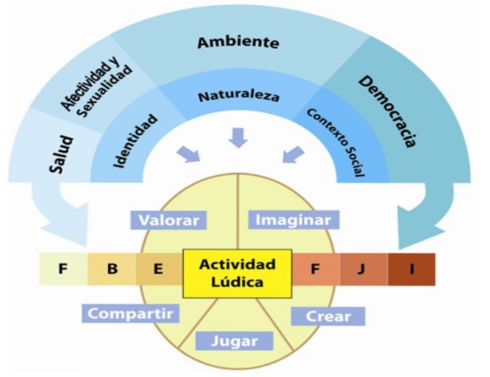
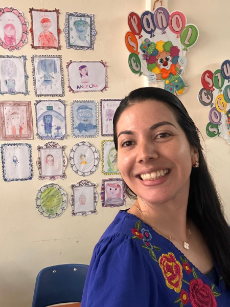
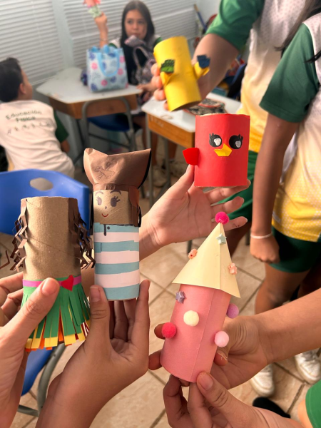

Te damos la más cordial bienvenida a este espacio diseñado especialmente para apoyar la labor docente en primero y segundo Ciclos.
Es un verdadero placer compartir este repositorio de recursos curriculares y pedagógicos para la asignatura de Artes Plásticas en primero y segundo Ciclos.
El arte es un lenguaje fundamental para la infancia, una vía de exploración, expresión y comprensión del mundo. Por ello, este entorno ha sido creado para convertirse en su aliado estratégico del día a día, facilitando las herramientas necesarias para transformar las aulas en verdaderos laboratorios de imaginación y creación.
Como docente de Artes Plásticas, tiene en sus manos una de las misiones más nobles y delicadas de la educación: modelar la percepción artística y la criticidad de las infancias.
Ante este gran compromiso sabemos que:
El rol docente se desarrolla bajo un profundo respeto por la individualidad de cada persona estudiante, fomentando la inclusión, la diversidad de expresión y el cuidado del entorno a través de la práctica artística.
La ética docente se refleja en el aula cuando creamos un espacio seguro donde el error es parte del aprendizaje y cada voz audible y visual es valorada.
El verdadero docente de Arte Plásticas no solo enseña técnicas; inspira.
Le motivamos a utilizar los recursos en este repositorio no como una receta rígida, sino como un lienzo en blanco para su propia innovación. Explore nuevos enfoques, asuma riesgos pedagógicos y documente sus procesos.
Su búsqueda constante de la excelencia será el motor que apoye el desarrollo integral de las personas estudiantes, eleve el nivel educativo de su institución.

Figura 1. Interrelación de las competencias creativas en el entorno áulico actual.
Modelo del Programa de Estudios
Este modelo se presenta en el programa como una guía teórica para los procesos de mediación. Los conocimientos se desarrollan a partir de actividades lúdicas, utilizando el modelo de Mitchel Resnick, donde la actividad implica procesos de imaginar, crear, jugar, compartir y valorar para generar el conocimiento.
Información de guía académica institucional para el desarrollo de competencias artísticas.
Planeamiento didáctico
Seleccione cualquiera de los planes institucionales para visualizar su contenido detallado:
Figura 2. Video explicativo sobre las fases en el desarrollo de un proyecto en el aula.
El componente Proyecto
El Proyecto en Artes Plásticas se desarrolla mediante tres etapas pedagógicas articuladas, que permiten organizar el proceso creativo de las personas estudiantes de manera progresiva, formativa y contextualizada.
Se recomienda que el proyecto se ejecute durante todo el período, de manera progresiva con los contenidos que se estén desarrollando. Esto permitirá atender adecuadamente los tres momentos que conforman su desarrollo.
Escuelas unidocentes
Explore los documentos
Flexibilidad Curricular
Explora materiales complementarios didácticos para el desarrollo de las lecciones artísticas en el aula.
Buenas Prácticas Docentes
Espacio orientado a destacar la labor trimestral de las personas docentes de Artes Plásticas, socializando sus experiencias y muestras de aula:

Jimena Morera Ulate
Escuela Brasil de Mora / Escuela Brasil de Santa Ana.
Licenciada en Enseñanza del Arte y la Comunicación Visual por la Universidad Nacional de Costa Rica, graduada en el año 2017.
Reconocimientos:
En 2016 recibe el reconocimiento como Estudiante Distinguida de la Universidad Nacional de Costa Rica, en mérito a su excelencia académica y compromiso con su formación profesional.Desde el año 2018 se desempeña como docente en el Ministerio de Educación Pública de Costa Rica, en el área de Educación Primaria.
A lo largo de su trayectoria profesional ha ejercido su labor con vocación, responsabilidad y compromiso, promoviendo el desarrollo integral de sus estudiantes mediante prácticas educativas innovadoras y centradas en el aprendizaje.






¿Quién sera la próxima persona docente destacada?
Acaso ¿Serás vos?


¿Quién sera la próxima persona docente destacada?
Acaso ¿Serás vos?